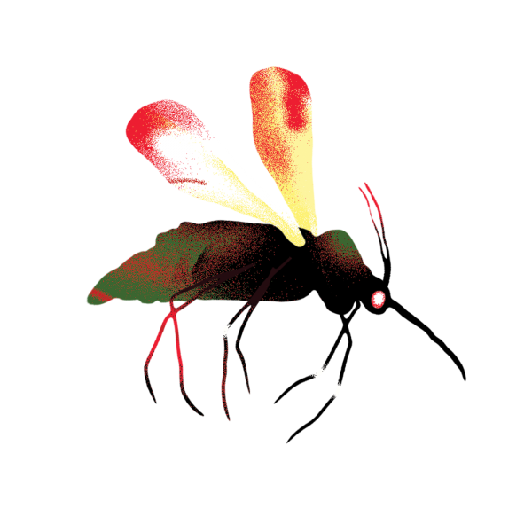

CULICIDAE
Caracterizados por tener apariencia general de “mosquito”, antenas largas, escamas en cabeza, patas y otras partes del cuerpo, además de probóscide larga para ejercer la hematofagia por parte de las hembras.
Especies

Caracterizados por tener apariencia general de “mosquito”, antenas largas, escamas en cabeza, patas y otras partes del cuerpo, además de probóscide larga para ejercer la hematofagia por parte de las hembras.